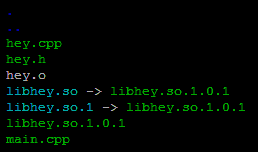

C++ Tutorial - Libraries - 2017
Use dynamic libraries instead of static libraries whenever possible!
There are two types of libraries we can make. The decision on which one we take can have a significant impact on our clients' applications, such as executable size, load time, etc.

A static library contains object code linked with an end-user application, and then becomes part of that executable. A static library is sometimes called an archive since it is just a package of compiled object files. These libraries are in directories such as /lib, /usr/lib or /usr/local/lib.
After resolving the various function references from the main program to the modules in the static library, a linker extracts copies of the required object modules from the library and copies these into the resulting executable file. When linking is done during the creation of an executable, it is known as static linking or early binding. In this case, the linking is usually done by a linker, but may also be done by the compiler. A static library, also known as an archive, is intended to be statically linked. Originally, only static libraries existed. Static linking must be performed when any modules are recompiled.
All of the modules required by a program are sometimes statically linked and copied into the executable file. This process, and the resulting stand-alone file, is known as a static build of the program.

The filenames always start with lib, and end with .a (archive, static library) on Unix/Linux, and on Windows it's a little bit complicated. Depending on how they are compiled, *.LIB files can be either static libraries or representations of dynamically linkable libraries needed only during compilation, known as Import Libraries. Unlike in the UNIX world, where different file extensions are used, when linking against *.LIB file in Windows one must first know if it is a regular static library or an import library. In the latter case, a .DLL file must be present at run time.
Here are implications of distributing our implementation as a static library:
- A static library is only needed to link an application. It is not needed to run that application because the library code is already embedded inside the application. So, our clients can distribute their applications without any additional run-time dependencies.
- If our clients want to link our library into multiple executables, each one will embed a copy of our code. If our library is 100MB in size, and our client wishes to link this into three separate programs, then we could be adding up to 300MB to the total size of their product. Notice that only the object files in the static library that are actually used are copied to the application. Thus, in reality, the total size of each application could be less than this worst case.
- Our clients can distribute their applications without any concerns that it will find an incompatible library on the end-user's side or a completely different library with the same name from another vendor.
- But if our clients want to be able to hot patch their application, in other words, they want to update the version of our library used by their application, they must replace the entire executable to achieve this. If this is done as an internet-based update, the end user may have to download a much larger update and hence wait longer for the update to complete.
A shared library or shared object is a file that is intended to be shared by executable files and further shared objects files. Modules used by a program are loaded from individual shared objects into memory at load time or run time, rather than being copied by a linker when it creates a single monolithic executable file for the program.
In other words, dynamic libraries are files linked against at compile time to resolve undefined references and then distributed with the end-user application so that the application can load the library code at run time. Usually, this requires use of a dynamic linker on the end user's machine to determine and load all dynamic library dependencies at run time, perform the necessary symbol relocations, and then pass control to the application.
The Linux dynamic linker is called ld.so and on the Mac it is called dyld. The dynamic linker supports a number of environment variables to modify or debug its behavior.
As mentioned earlier, dynamic libraries are sometimes called shared libraries because they can be shared by multiple programs. On Unix-like machine, they have a .so (shared object, dynamically linked library) file extension. On Windows, dynamically linkable libraries usually have the suffix *.DLL, although other file name extensions may be used for specific purpose dynamically-linked libraries, e.g. *.OCX for OLE libraries.
Here are implications of using dynamic libraries to distribute our program:
- Our clients must distribute our dynamic library with their application as well as any dynamic libraries that our library depends on, so that it can be discovered when the application is run.
- Our clients' applications will nor run if the dynamic library cannot be found. Also, the application may not run if the dynamic library is upgraded.
- Using dynamic libraries can often more efficient than static libraries in terms of disk space if more than one application needs to use the library. This is because the library code is stored in a single shared file and not duplicated inside each executable. However, even with static library, the executable only needs to include the object code from the static library that is actually used. So, if each application uses only a small fraction of the total static library, the disk space efficiency can still rival that of a single complete dynamic library.
- Dynamic libraries may also be more efficient in terms of memory. Most modern OS will attempt to only load the dynamic library code into memory once, and share it across all applications that depend upon it. This may also lead to better cache utilization. By comparison, every application that is linked against a static library will load duplicate copies of the library code into memory.
- If our clients want to hot patch their application with a new (backward compatible) version of our shared library, they can simply drop in the replacement library file and all of their applications will use this new library without having to recompile or relink.
Plug-ins enable customizing the functionality of an application. For example, plug-ins are commonly used in web browsers to play video, scan for viruses, and display new file types. Well-known plug-ins examples include Adobe Flash Player, QuickTime, and Microsoft Silverlight.
Dynamic libraries are usually linked against an application and then distributed with that application so that the OS can load the library when the application is launched. However, it is also possible for an application to load a dynamic library on demand without the application having been compiled and linked against that library.
This can be used to create plugin interface, when the application can load additional code at run time that extends the basic capabilities of the program.
This gives us the capability to create extensible code that allow our clients to drop in new functionality that our program will then load and execute.

Here are sample codes:
// mylib.h
#ifndef MYLIB_H
#define MYLIB_H
double calcSqrt(double);
#endif
// calc.c
#include <math.h>
#include "mylib.h"
double calcSqrt(double d)
{
return sqrt(d);
}
// main.c
#include <stdio.h>
#include "mylib.h"
int main()
{
double d = 100;
printf("sqrt(%3.0f)=%2.0f\n",d,calcSqrt(d));
return 0;
}
$ gcc -c main.c $ gcc -c calc.c $ gcc -o main calc.o main.o -lm or gcc -o main calc.o main.o /usr/lib/libm.a $ ./main sqrt(100)=10
Now, let's build a new library using ar.
$ ar crv libcalc.a calc.o
Now we can make executable from the library we just built, libcalc.a
$ gcc -o main main.o libcalc.a -lm or $ gcc -o main main.o -L. -lcalc -lm $ ./main sqrt(100)=10
The -L. option tells compiler that the library, libcalc.a can be found in the current directory.
We can list symbols in the object/library by using nm command:
$ nm main
080495a0 d _DYNAMIC
08049674 d _GLOBAL_OFFSET_TABLE_
0804855c R _IO_stdin_used
w _Jv_RegisterClasses
08049590 d __CTOR_END__
0804958c d __CTOR_LIST__
08049598 D __DTOR_END__
08049594 d __DTOR_LIST__
08048588 r __FRAME_END__
0804959c d __JCR_END__
0804959c d __JCR_LIST__
08049694 A __bss_start
08049690 D __data_start
08048510 t __do_global_ctors_aux
08048380 t __do_global_dtors_aux
08048560 R __dso_handle
0804958c d __fini_array_end
0804958c d __fini_array_start
w __gmon_start__
08048509 T __i686.get_pc_thunk.bx
0804958c d __init_array_end
0804958c d __init_array_start
08048490 T __libc_csu_fini
080484a0 T __libc_csu_init
U __libc_start_main@@GLIBC_2.0
0804958c d __preinit_array_end
0804958c d __preinit_array_start
08049694 A _edata
0804969c A _end
08048538 T _fini
08048558 R _fp_hw
080482c0 T _init
08048330 T _start
08048450 T calcSqrt
08048354 t call_gmon_start
08049698 b completed.5791
08049690 W data_start
08049694 b dtor_idx.5793
080483e0 t frame_dummy
08048404 T main
U printf@@GLIBC_2.0
U sqrt@@GLIBC_2.0
$ nm libcalc.a
calc.o:
00000000 T calcSqrt
U sqrt
The character in the second column represents the symbol type: T refers to a text section symbol that is defined in the library, U refers to a symbol that is referenced by the library but is not defined by it. An uppercase letter specifies an external symbol, while a lowercase represents an internal symbol.
The string in the 3rd column provides the mangled symbol name. We can unmangle a symbol using c++filt command.
We can list global symbols using g option in the nm command:
nm -g main
Also, see Creating Static Libraries on Linux
A typical shared library extension is so. For math library, it is /usr/lib/libm.so.
When a program uses shared library, the code itself is not included in the program, but it just links the library to refer it at run time. In that way, several program use the library without having it, and can save space. In other words, shared libraries address the disadvantages of static libraries. A shared library is an object module that can be loaded at run time at an arbitrary memory address, and it can be linked to by a program in memory. Shared libraries often are called as shared objects. On most UNIX systems they are denoted with a .so suffix and Microsoft refer to them as DLLs (dynamic link libraries).
Also, shared library has addition advantage over static library because it can be updated independently.
Actually, the file, /usr/lib/libm.so is a symbolic link to the revision of libm.so.6, and it is used at compile time.
$ ls -la libm.so lrwxrwxrwx 1 root root 19 Feb 6 2008 libm.so -> ../../lib/libm.so.6
When linux application starts, the OS checks the library version requested by the application.
In linux system, ld.so (dynamic linker/loader) loads the shared libraries needed by a program, prepares the program to run, and then runs it.
When we try to run a program, but it is complaining that a library is missing though we know the library is there (such as in /usr/local/lib). But most likely /usr/local/lib is not on the default place (/usr/lib) where the program looks for the lib. So, we need to let the system know where to look for. There is a file (/etc/ld.so.conf) on our system where all the paths to the libraries are mentioned. To do that, we should run ldconfig.
We can check the required shared libraries for a program to run by using ldd:
$ ldd main
linux-gate.so.1 => (0x00dbb000)
libm.so.6 => /lib/libm.so.6 (0x493c9000)
libc.so.6 => /lib/libc.so.6 (0x4a439000)
/lib/ld-linux.so.2 (0x4a417000)
This our case, the main program is using shared libraries for math and Standard C.
To make shared library with calc.o, we do the following:
$ gcc -shared -fPIC -o libcalc.so calc.o
The command tells the compiler driver to generate a shared library, libcalc.so, from the object module calc.o. The -fPIC option tells the compiler to generate position independent code (PIC).
Now, suppose the primary object module is main.o, which has dependencies on calc.o . In this case, the linker is invoked with:
$ gcc main.o ./libcalc.so -lm
The command above makes an executable file, a.out, in a form that can be linked to libcalc.so at load time. However, a.out does not contain the object module calc.o, which would have been included had we created a static library instead of a shared library. The executable simply contains some relocation and symbol table information that allow references to code and data in libcalc.so to be resolved at run time. Thus, a.out here is a partially executable file that still has its dependency in libcalc.so.
The executable also contains a .interp section that has the name of the dynamic linker, which itself is a shared object on Linux systems, ld-linux.so. So, when the executable is loaded into memory, the loader passes control to the dynamic linker. The dynamic linker contains some start-up code that maps the shared libraries to the program's address space.
It then does the following:
- relocates the text and data of libcalc.so into memory segment
- relocates any references in a.out to symbols defined by libcalc.so

Then, the dynamic linker passes control to the application, and now the location of shared object is fixed in the memory.
Shared libraries can be loaded from applications even in the middle of their executions. An application can request a dynamic linker to load and link shared libraries, even without linking those shared libraries to the executable. Linux provides system calls, such as dlopen to load a shared object, dlsym to look up a symbol in that shared object , and dlclose to close the shared object.
We've already used some of the tools to explore object/executable files, here is the list of tools:
- ar
creates static libraries. - ldd
lists the shared libraries on which the object binary is dependent. - nm
lists the symbols defined in the symbol table of an object file or a static library. - objdump
to display all the information in an object binary file. - strings
list all the printable strings in a binary file. - strip
deletes the symbol table information. - c++filt
demangle low-level names into user-level names (unix/linux command).
Unlike some authors who prefer using combined word "link-loading, in the page, I've been using those separated from each other.
- Linker
After compilation, the fragments (compilation unit) of a program are glued together by a linker.
Combines two or more objects (relocatable object) and supplies the information needed to allow references between them.
Relocation (loader does this as well) and the resolution of external references are performed by the linker. - Loader
Loading an executable object into memory for execution.
Note:
- relocatable object
A relocatable object code is acceptable as input to a linker.
A relocatable object file has following table information: import table, relocation table, and export table. - executable object
Executable object code is acceptable as an input to a loader, and it can be brought into memory and run.
Executable object file is distinguished by the fact that it contains no references to external symbols, and it also defines a starting address for execution.
Using static libraries can hide problems in case we defined the same function several times. Let's look at the following example, where a.c and b.c both defined who_are_you() function.
In the first build, we combine the two source files and make it into one archive. At link time, the linker will extract the first version of who_are_you() that it encounters. However, it will not give any warning regarding the presence of multiple definitions.
In the second build, instead of combining the two sources into one archive, the same code was linked using individual object files. Then, the linker fails to make the executable.
// a.c
#include <stdio.h>
void who_are_you()
{
printf("I am A\n");
}
// b.c
#include <stdio.h>
void who_are_you()
{
printf("I am B\n");
}
// main.c
#include <stdio.h>
void who_are_you();
int main()
{
printf("calling who_are_you()\n");
who_are_you();
return 0;
}
Build Case I - link against an archive already combined a.o and b.o:
$ gcc -c a.c $ gcc -c b.c $ ar -r mylib.a a.o b.o $ gcc main.c mylib.a $ ./a.out calling who_are_you() I am A $
When we combine them into an archive and link into an executable, the linker extracts one definition out of two. In our case, it selected from a.c. However, the builds fails because of the multiply defined symbol if we link the object file directly and make an executable as shown in the example below:
Build Case II - individual link - a.o, b.o:
$ gcc main.c a.o b.o b.o: In function `who_are_you': b.c:(.text+0x0): multiple definition of `who_are_you' a.o:a.c:(.text+0x0): first defined here collect2: error: ld returned 1 exit status $
We get this behavior because lots of compilers do not cross-file checking (or optimization), which means either the code held in the static library does not play a role in cross-file checking or the functions are not inlined from the static library into the executable.
To inspect what's in the library, we can use nm on the static library:
$ nm mylib.a
a.o:
U puts
0000000000000000 T who_are_you
b.o:
U puts
0000000000000000 T who_are_you
In this example, we will try to create a small .dll file that has a single function, printHey(), which is called from the main routine in the main.cpp file.
Here are the contents of the files:
// hey.h
#ifdef BUILD_BOGO_DLL
#define BOGO_PRINT_API __declspec(dllexport)
#else
#define BOGO_PRINT_API __declspec(dllimport)
#endif
extern "C" BOGO_PRINT_API void printHey();
// hey.cpp
#include <iostream>
#include "hey.h"
void printHey()
{
std::cout << "Hey! Welcome to bogotobogo" << std::endl;
}
// main.cpp
#include "hey.h"
int main()
{
printHey();
return 0;
}
If we want a function to be callable from a DLL on Windows, we must explicitly mark its declaration with the following:
__declspec(dllexport)
For example,
__declspec(dllexport) void MyFunction(); class __declspec(dllexport) MyClass;
In the opposite case, if we want to use an exported DLL function in an application, then we must prefix the function prototype with the following:
__declspec(dllimport)
Therefore, it's common to employ preprocessor macros to use the export declaration when building an API but the import decoration is needed when using the same API.
/LD instructs cl to create a .dll file. (It can be instructed to create other formats such as .exe or .obj.) /DBUILD_BOGO_DLL defines the BOGO_PRINT_API macro for this particular building process so that the printHey symbol is exported from this DLL. /EHsc will make catch clause not to catch asynchronous exceptions.
See make.
Let take a quick inspection of the sources and generated output. It reveals two important facts. As mentioned earlier, the Windows-specific syntax, __declspec(dllexport), is needed to export any functions, variables, or classes from a DLL. Likewise, the Windows-specific syntax, __declspec(dllimport), is needed to import any functions, variables, or classes from a DLL.Then, new files have been generated as shown below since the compilation generates the files: hey.dll and hey.lib. The hey.lib is used to link the main sources.

To compile and link the main code, use the following command line:
Now, we have application called main.exe:
As a quick summary, we can use a Visual C++ project to create one of three variants (single or multi-threaded) of a project:
- Dynamic-link library (DLL or .dll)
- Static library (LIB or .lib)
- Executable (.exe)
For more on DLL, please visit
http://www.bogotobogo.com/Win32API/Win32API_DLL.php.
Modified hey.h looks like this:
// hey.h
#if defined (__GNUC__)
#define BOGO_PRINT_API __attribute__ ((__visibility__("default")))
#elif defined (WIN32)
#ifdef BUILD_BOGO_DLL
#define BOGO_PRINT_API __declspec(dllexport)
#else
#define BOGO_PRINT_API __declspec(dllimport)
#endif
#endif
extern "C" BOGO_PRINT_API void printHey();
Using the GNU C++ compiler, we can simply use the -shared linker option to generate a .so file instead of an executable. On platforms where it is not the default behavior, we should also specify either the -fpic or the -fPIC option to instruct the compiler to emit position-independeet code (PIC). This is needed because the code in a shared library may be loaded into a different memory location for different executables. So, it's important to generate PIC code for shared libraries so that user code deos not dependent on the absolute memory address of symbols. A shared library is potentially mapped to a new memory address every time it gets loaded. Therefore, it makes sense to generate the addresses of all variables and functions inside the library in a way that can be easily computed relative to the start address that the library is loaded to. This code is generated by the -fPIC option and makes the code relocatable. The -o option is used to specify the name of an output file, and the -shared option builds a shared library in which unresolved references are allowed.
g++ -c -fPIC hey.cpp -o hey.o g++ -shared -Wl,-soname,libhey.so.1 -o libhey.so.1.0.1 hey.o
Every shared library has a special name called the soname. The soname has the prefix lib, the name of the library, the phrase .so, followed by a period and a version number that is incremented whenever the interface changes. On a working system a fully-qualified soname is simply a symbolic link to the shared library's real name.
Every shared library also has a real name, which is the filename containing the actual library code. The real name adds to the soname a period, a minor number, another period, and the release number. The last period and release number are optional. The minor number and release number support configuration control by letting you know exactly what version(s) of the library are installed.
The last command (g++ -shared ..), on successful, produces a shared library named libhey.so.1.0.1.
In that command, -W1 passes options to linker. In this example, the options to be passed on to the linker:
- -soname libhey.so.1
- the name passed with the -o option is passed to g++.
After those commands, we have the following in the list:
[]$ ls hey.cpp hey.h hey.o libhey.so.1.0.1 main.cpp
Now we have successfully created a shared library named libhey.so.1.0.1. Let us see how to include this shared library in our application.
symbolic link:
ln -sf libhey.so.1.0.1 libhey.so ln -sf libhey.so.1.0.1 libhey.so.1
- The link to ./libhey.so allows the naming convention for the compile flag -lhey to work.
- The link to ./libhey.so.1 allows the run time binding to work.

g++ -o main main.cpp -L. -lhey
- The -l option tells the compiler to look for a file named libsomething.so The something is specified by the argument immediately following the -l. i.e. -lhey
- The -L option tells the compiler where to find the library. The path to the directory containing the shared libraries is followd by -L. If no -L is specified, the compiler will search the usual locations.
- -L. means looking for the shared libraries in the current directory.
If compilation is successful an executable named main is created. We can check if our library is include successfully into the executable by linker using the following command:
ldd main
We can see that linker cannot find our shared library libhey.so.
When we run an executable that depends on a dynamic library, linux system will search for the standard library locations, such as /lib and /usr/lib. If the .so file cannot be found in those places, the executable fail to start. The ldd commnad, as shown above, can be used to tell us if the system cannot find any dependent dynamic library. There are three main options to resolve this issue:
- We have to ensure that our library is installed in the standard locations.
- The LD_LIBRARY_PATH environment variable can be set to argument the default library search parh with a colon-separated list of directories.
- We can use the rpath (run path) linker option to burn the preferred path to search for dynamic libraries into executable. The following line of compile will produce an executable that will cause the system to search in /usr/local/lib for any dynamic libraries:
g++ -o main main.cpp -L. -lhey -Wl,-rpath,/usr/local/lib
In our case, we will set the environment variable LD_LIBRARY_PATH to the directory containing the shared libraries, which is current directory ("."):
export LD_LIBRARY_PATH=.
If we do ldd main again:

Now, if we issue ./main, we get:
Hey! Wlecome to bogotobogo
On linux, static libraries is an archive of object files. We use ar to compile object files into a static library. The command below shows how we compile hey.cpp file to .o and create a static library, libhey.a from the object files:
ar -crs libhey.a hey.o
The -c option to ar creates an archive, -r inserts the supplied .o file into that archive, and -s creates an index for the archive.
Then, we can link against the library using -l option to ld or g++. The -L linker option is used to specify the directory where the library can be found:
$ g++ -o main main.cpp -L. -lhey $ ./main Hey! Welcome to bogotobogo $
Also, see Building Library - static
More to come...
Other linux tips, see Linux Tips
Ph.D. / Golden Gate Ave, San Francisco / Seoul National Univ / Carnegie Mellon / UC Berkeley / DevOps / Deep Learning / Visualization